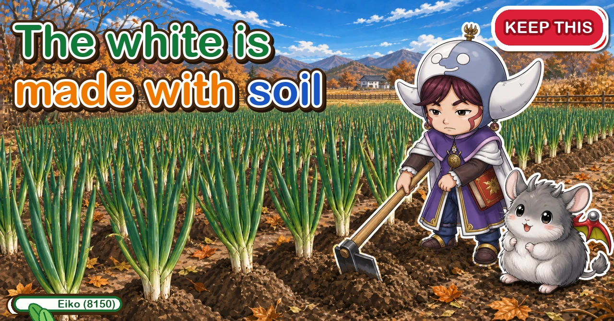
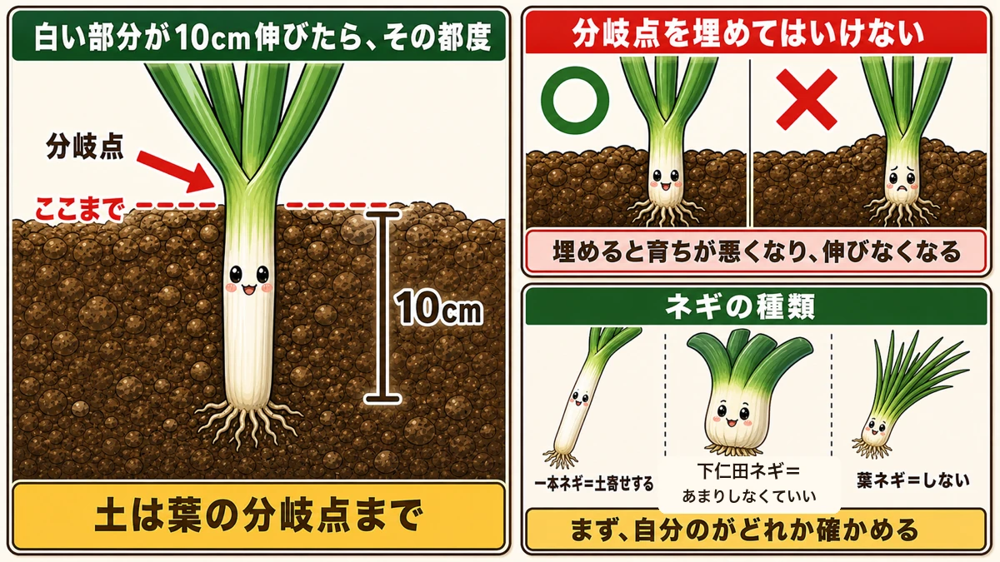
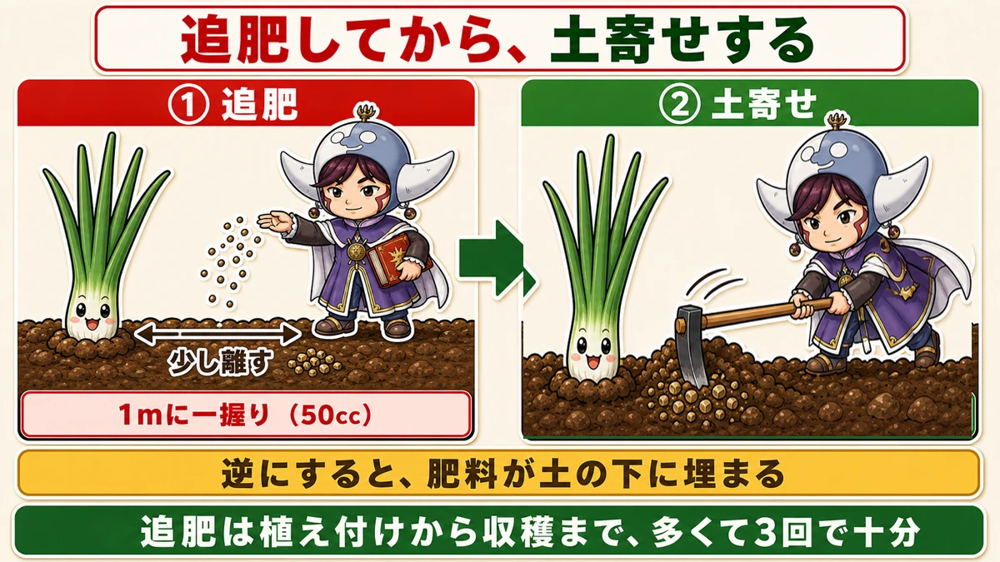
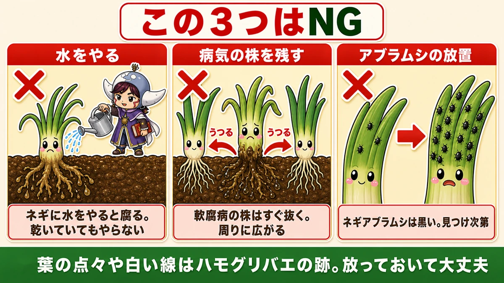
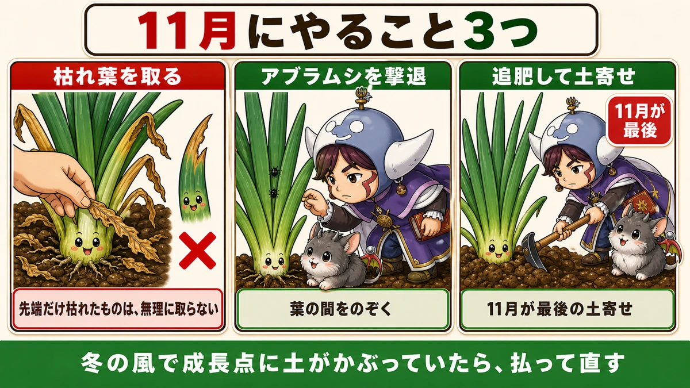
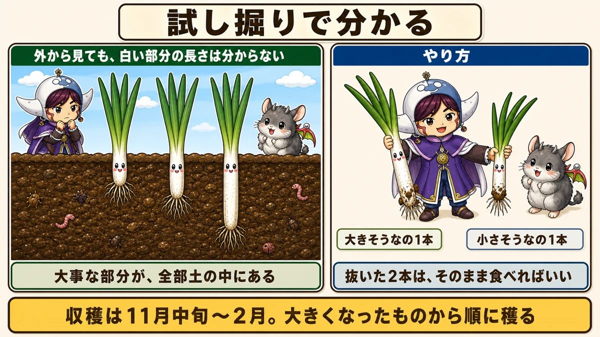
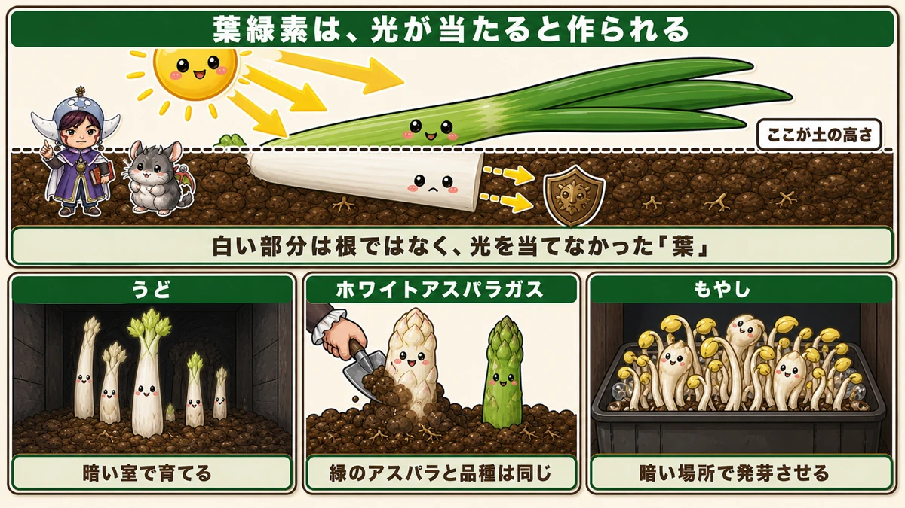

The white part is made by covering it with soil 🧅 The last earthing-up is in late autumn

🗨️ "I planted leeks and they're all green."
🗨️ "When and how much am I supposed to earth them up?"
🗨️ "I can't tell from the outside whether they're ready."
Hello, I'm Eiko. Eight years of growing vegetables organically and without pesticides, and a teaching licence in science.
The point, up front:
The white part of a leek is made by covering it with soil.
Not knowing this means never getting one. The white isn't a varietal feature, and it isn't something that happens automatically because it's underground. It is the result of a person putting soil over it and shutting out the light.
So without earthing up, you get a leek that's green all the way down — and late autumn is the last chance.
① Earth up every time it grows 10 cm

What this diagram says （図解の文字）
- Every time the white part grows 10 cm, do it again
- The branch point ／ up to here ／ 10 cm
- Soil up to where the leaves divide. Never bury the branch point itself
- Bury it and growth suffers; it stops lengthening
- Types — single-stem leek: earth up ／ Shimonita type: barely needed ／ green bunching onion: don't
- First, work out which one you're growing
The rule is when the white part has grown 10 cm, add soil — decided by looking at the plant, not by the calendar.
Grows, covered, grows, covered. The white lengthens each time. Roughly three times between planting and harvest, with the last one in late autumn.
How high — the important part
Look at a leek and find where the leaves start dividing left and right. That's the branch point.
Soil up to there. And never bury the branch point itself.
Bury it and growth suffers — it stops lengthening. All that work, and the effect is negative.
Wanting a long white part makes you want to pile it higher. I did it once, covered the branch point with the best of intentions, and that plant visibly stopped growing.
As close as you can, without burying it.
Which kind are you growing?
- Single-stem leek — needs earthing up. This article is about these
- Shimonita type — grows well with little earthing up
- Green bunching onion — you eat the green, so don't earth it up at all
Check which you have first. Diligently earthing up something that didn't need it is a common story.
② Feed at most three times

What this diagram says （図解の文字）
- Feed first, then earth up
- ① feed — slightly away from the plant — a handful (50 ml) per metre
- ② earth up
- The other way round buries the fertiliser
- At most three feeds between planting and harvest
Feed, then earth up. The other way round and the fertiliser ends up buried under the new soil.
- At most three feeds over the whole season
- A little away from the plant
- A handful — about 50 ml — per metre of row
I use poultry manure, scattered along both sides, then draw the soil over it. Leeks aren't greedy — more feed doesn't make them thicker.
③ Three things not to do

What this diagram says （図解の文字）
- These three are wrong
- Watering — water a leek and it rots. Don't, even when it's dry
- Leaving a diseased plant in — it spreads ／ pull a soft-rot plant immediately
- Ignoring aphids — leek aphids are black. Deal with them on sight
- Dots and thin white lines on the leaves are leaf-miner trails. Leave them alone
① Watering
Water a leek and it rots. Don't water, even when it's dry.
Coming from any other crop this is startling — dry soil makes you reach for the can. With leeks, that's how the roots rot. Rainfall is enough.
② Leaving a diseased plant in the ground
A plant whose base has gone to soft rot must come out immediately.
Keeping it in case it's still usable spreads it to the neighbours — you lose a bed to save one plant. And pulling it improves air movement, which helps the rest.
③ Ignoring aphids
Leek aphids are small and black, and they increase as the weather cools. "Only a few" becomes a great many very quickly. Remove them on sight.
④ Three jobs for late autumn

What this diagram says （図解の文字）
- Three jobs for late autumn
- Remove dead leaves — but don't force off ones that are only dying at the tip
- Deal with aphids — look between the leaves
- Feed and earth up — this is the last one
- If winter wind has buried the growing point in soil, brush it clear
- Remove dead leaves — it opens up the base. Don't force off leaves that are only dying at the tip; left alone the growing point extends and the leaf dies completely, and you take it then. Pulling damages living tissue
- Deal with aphids — look between the leaves
- Feed and earth up — the last one of the year, so do it properly
And through the winter
- take off dead leaves
- check for aphids after mild spells
- pull the small weeds
- if wind has blown soil over the growing point, clear it
That last one happens more than you'd expect: days of strong wind can bury the branch point you were so careful not to cover. Brush it off when you see it.
⑤ You have to dig one to know

What this diagram says （図解の文字）
- A test dig tells you
- You can't judge the length of the white part from outside — the part that matters is all underground
- Method — one that looks big, one that looks small
- Eat the two you pulled
- Harvest from late autumn through late winter, taking the biggest first
Leeks have a difficulty other crops don't: you can't see how long the white part is.
A mooli can be felt at the shoulder, a cabbage squeezed. With a leek, everything that matters is in the ground.
So: pull one that looks big and one that looks small, look at the white, and if it's short, leave the rest. Eat the two you pulled — nothing is wasted.
Harvest runs from late autumn into late winter. Take the biggest first, a few at a time. Left in the ground they keep, so the garden is the storage.
The science: the white is leaf that never saw light 🔬

What this diagram says （図解の文字）
- Chlorophyll is made when light falls on it
- This is the soil level
- The white part isn't root — it's leaf that was never given light
- Udo — grown in a dark room ／ white asparagus — the same variety as green ／ bean sprouts — germinated in the dark
Plants are green because of chlorophyll, and chlorophyll is produced in response to light.
So the white part of a leek is not root. It's leaf — leaf that was never given light, and so never made chlorophyll.
The same principle runs through several familiar foods:
- White asparagus — the same variety as green asparagus, grown covered
- Bean sprouts — germinated in the dark
- Udo — forced in a dark room
None of them is a different plant. Each is the same plant with the light withheld.
Which makes earthing up a leek an experiment you perform on purpose, and then eat ☺️
To sum up
- ✅ The white part is made by covering it. No earthing up, no white
- ✅ Add soil each time the white grows 10 cm
- ✅ Soil up to the branch point — never bury it
- ✅ Check which type you're growing first
- ✅ Feed first, then earth up; at most three feeds
- ✅ Don't water — leeks rot
- ✅ Pull soft-rot plants immediately
- ✅ Deal with aphids; ignore leaf-miner trails
- ✅ Late autumn: dead leaves, aphids, final feed and earthing up
- ✅ Clear wind-blown soil off the growing point
- ✅ Test dig — you can't judge it from outside
- ✅ 15–20 °C is the range; after a hot summer, wait longer
- ✅ White asparagus, bean sprouts and leeks are all the same trick
You don't have to do all of it. Go and find the branch point on one plant. Once you can see it, you know exactly how high to go 🧅
Thank you for reading!